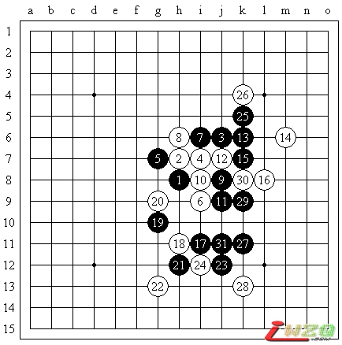
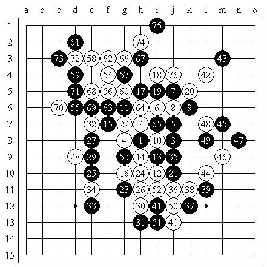
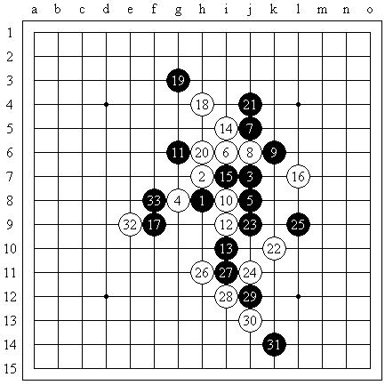
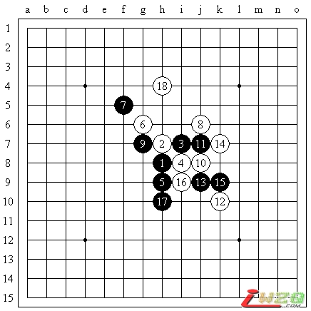
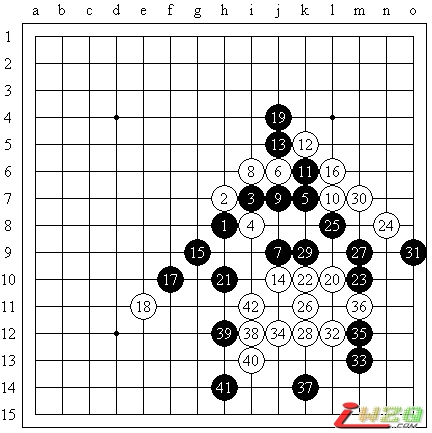
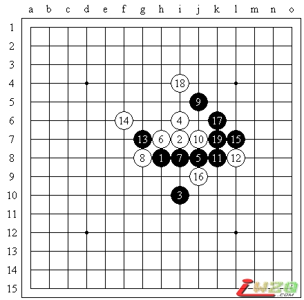

世团赛日记・4月29日
一大早就从家出发直奔机场，本来以为我到得比较早，没想到其他人更早，再加上出关等手续异常顺利，我们只能在登机前1个小时就坐到了登机口外。本次比赛，曹冬忘了穿西装，忘了带棋谱，最后办理托运的时候还忘了把棋具拿出来，导致我们一路无聊到日本，还好一切顺利，接机的时候见到了石谷信一先生，还有一位翻译（中国人），这令我们在接下来的几天中顺利不少。之后我们直奔比赛地点，并与奚振扬汇合。
晚饭之后，我们整理好了各自行李，我、曹冬、殷立成住一间房，奚振扬住一间房，研究棋主要在我们房中，上网联络之类的事情则在奚振扬房中。由于开幕式之前要确定台次排列，我们又交流了一下想法，基本的原则是把我和曹冬分配在前两台，殷立成和奚振扬分配在后两台，考虑到奚振扬在四台更有可能拿分，因此把殷立成分配在了三台，我再次明确表示希望打一台，但是曹冬本人和作为队长的殷立成一直不表态……填写台次表之前，曹冬还是一度想把自己填到一台去，我只好继续提出抗议，后来曹冬也没坚持下来，于是就把我放到了一台的位置。事实证明，这个排列方式还是比较成功的，我和曹冬分别以7.5分（与Tunnet并列）和8.5分（7胜3和不败）获得最佳台次，殷立成和奚振扬则均以6分的高分一并帮助中国队取得了冠军。
开幕式上我见到了许多重量级的棋手，但最令我们吃惊的还是日本队将中村茂先生放在了一台，而现任名人长谷川一人先生则坐镇二台，毕竟在一般的认识中，日本的传统作风应该会把现任名人放在第一台的，结果曹冬在选择二台的同时还丧失了向中村茂再次挑战的机会。而对于我来说，面对诸多强手，既是一种压力，也是一种挑战，
开幕式上，一向运气不好的我终于为中国队抽到了一张上上签：7轮预赛既能有一个平稳的开始，又能有一个轻松的结尾，可以为决赛做好充分的准备。
开幕式结束后，我很快进入了比赛状态，明天第一轮一定要开个好头。虽然乌克兰-阿塞拜疆的联队实力可能不强，但毕竟是世界大赛，不可轻敌，况且我在第一轮总有状态不佳的情况出现。同样是为了尽快进入比赛状态并保持稳定，我直接选择了疏星作为第一局的开局，毕竟疏星1打无论执黑执白我都知道如何应付，因此还是很轻松地休息了。
［此帖子已被 有志青年 在 2010-5-17 13:19:42 编辑过］
［此帖子已被 有志青年 在 2010-5-19 8:36:34 编辑过］
［此帖子已被 有志青年 在 2010-6-20 12:46:28 编辑过］
早饭的感觉不错，可以提供不错的热量储备，按照我自己的习惯还准备了一些饮料和巧克力。住宿房间和赛场只有不到10分钟的路程，比赛环境也很好，这令我拥有了十分良好的状态。第一轮比赛开始前，我的对手送给我了一枚列宁诞辰100周年的纪念章和一枚乌克兰硬币。
第八届世界连珠团体锦标赛第一轮-预赛第一轮，2010年4月30日，日本东京
疏星局（不换），5A=g7，中国队-李一（黑，72min）胜乌克兰-阿塞拜疆联队-Piddubnyy Kostyantyn（白，70min）

按照原定计划，我选择了疏星1打，对手没有交换，实战的8是国内普遍认为强于8-g6的手段，不知道国外对此看法如何。但后面几轮的对局显示，乌克兰-阿塞拜疆联队似乎也只是对疏星局面比较熟悉。10稍显死板，一般而言10-11或10-30都是不错的想法。13后局面基本定型，我也开始变得比较放松，毕竟选择这个变化说明对手的总体实力并不很强。14简单的防守，我考虑了一段时间来构想如何进攻：10-12的活二被限制后，黑棋在下方先动手盖掉眠三，可以取得不错的优势，g5则是常见的做棋形状，同时根据以前的对局经验，盘面左边是主战场，若是考虑联系全盘的杀法，则要将优势汇集在左边然后成杀。这时我考虑了17-i10的变化，但18-18之后，若是黑棋不能在局部成杀，则有可能给白棋带来后盘不错的形势。为了求稳，我决定缓一手试试对手的应对，15是在右边攻防兼备的手段，一方面利用两个活二伺机向左上和下方发展，另一方面这个进攻不会使白棋形成有任何反击，我会根据对手的应对来判断接下来的主要进攻方向。实战中对手防守了我向左上的连接，17向下做棋则是比较自然的进攻手段，但回到现在来看则稍显浮躁，事实上此时的g5依然不失为很好的进攻点，实战18之后我意识到如果不慎重进攻，将会面临不利的局面。19一手耗费了我很长时间，如果直接在下面进攻则有些空虚，毕竟要想办法将29或30位的跳三进攻点利用起来，由于16和18的存在已经变得有一定困难，另一方面，如果贸然进攻，白棋在19位反击后可能会利用自己的棋形严重破坏黑棋的连接。此时从“敌之要点，我之要点”的思路出发，我自然考虑到19-19的手段，起初我认为这手太缓，因为20-20是太明显的强防，但当我意识到21-21的妙手后改变了想法，实战也如我所料，20之后我很快自信地落下21！21手可以将黑棋的优势向左边过渡，同时如果黑棋占据22位，白棋只能毫无反击地填在j10，此时22-22是显然的防守，但又将23位一子通三路的好点贡献了出来。实战23之后，我开始重新计算白棋的防守手段，但惊讶地发现了一个强防：24-k12！仔细验算之后，我没有找到任何黑棋连续进攻的手段，此时我只能尽量冷静下来，毕竟白棋没有成型的反击，我也不用太过悲观，但幸运地是，我的对手在压力之下没能认真计算防点，实战24弱！我再次开始考虑直接做棋的杀法，但我再次发现，最强的进攻点是27位，却恰好给13-15的活二造成了长连，验算其他进攻点也找不到完全的杀法，无奈之下我实战的25选择了活三，即使26-30，27也有g5、i4等好点可供进攻，同时白棋并无特别顽强的反击，但对手的26落子很快，跟防！27一手瞬间变为极好的位置，简单终结了一下，黑必胜！
除四台直接取胜外，殷立成在三台取胜也并不困难，只有二台曹冬面对美女诱惑，战斗半天才在角落胜出。本轮比赛全取4分，情况比较有利。日本1队、2队战平令人吃惊，爱沙尼亚1队轻松横扫2队，中国台北战平俄罗斯初露锋芒。
午餐比较轻松，中午也有比较充分的休息时间，我也有机会稍微补给一下。紧接着，下午的比赛便开始了。
第八届世界连珠团体锦标赛第二轮-预赛第二轮，2010年4月30日，日本东京
溪月局（交换），5A=f7，f8，g5，g6，h9，i8，j7，中国队-李一（黑，78min）胜日本2队-大角有希（白，125min）
今天是比赛日的第二天，有第三轮和第四轮（预赛第三轮和第四轮）共两轮对局，上午可能对阵日本1队的中村茂，下午可能对阵俄罗斯队的Sushkov Vladimir。这两位棋手都曾获得过世界冠军头衔，是强大的对手，但我信心十足。
早饭后我提前来到比赛场地，结果发现日本1队1台的台签是河村典彦，令我有些意外，但这无关大局。比赛开始前，河村典彦先生解释说中村茂有工作不能来，向我表示了歉意，或许他也知道很多人都希望与中村茂对局。但于我而言，身为第四届世锦赛冠军的河村典彦同样是值得挑战的对手。
第八届世界连珠团体锦标赛第三轮-预赛第三轮，2010年5月1日，日本东京
金星局（交换），5A=i6，i7，日本1队-河村典彦（黑，136min）负中国队-李一（白，123min）

金星三打的局面，我个人觉得执黑执白都差不多，但是其他棋手似乎更倾向于执黑，在最强4的防守下黑棋大概有5个五手打点可供选择，不能必胜的3个点我也都基本了解了防守方式。6-35的变化，7-10不好，但7-6则可以慢慢积累优势。实战考虑了一下，还是按照原定计划选择了6活三的变化，以下至11基本正常。12！其实这一手在去年世锦赛QT上Karlsson对田村的比赛中就出现过了，但俄罗斯慢棋网上相关的研究却比较少，另一方面我也考虑到河村典彦可能接触流行变化较少（从后面的对局来看，事实的确如此），寄希望于他在接下来的应对中出错。16强行构造形状，河村在这一手花费了很长时间，但还是展示了他身为前世界冠军的实力：17、21是两个关键点，河村正确应对，以下至32局面基本定型，虽然对手没有出现任何纰漏，但却被浪费了大量时间。此时预想中的应对是33-g12，而我在考虑是否应该先在33位冲四，但河村此时的交换稍显急躁，33先占要点！35？38先逼黑棋应对，40简明处理，此时只要白棋继续保守行棋，黑棋将没有任何胜机。不过我注意到曹冬在长谷川一人突如其来的变招下陷入苦战，殷立成也形成败势，奚振扬更是只用了1个小时就在不熟悉的局面下走丢了唯一防，此时我保守求和只能令中国队雪上加霜，因此只能奋力一搏。尽管如此，我不确定右边的黑棋是否需要补防一手，这令我痛苦万分。最终我决定将决战地点选在最为空旷、最有潜力的左上方，42试探，若43反击，则白棋防于k9，然后在右上方保留优势，在左上方保留先手，同时消灭右边黑棋的势力。实战中河村的43冷静！我在下44手时实在承受不了右边黑棋的势力，防守了一步，45再次消灭我任何可能的上下连接！我几乎感到可能要因为保守而失先了，但也正基于此，河村的49显得过于追求连接，我考虑了一下，取得先手后54终于可以提前在上方动手，这也将是我最后的机会，如何选择进攻？白棋的势力实在太薄，按传统方式直接进攻必被打断要点，溃不成军，只得避实就虚，但河村的防御依然敏锐。58并非计算而得，而是“如果不占据这个位置就完全没有机会取胜”。此时我准备了59位最后的进攻，但河村的59-59！这手近乎匪夷所思的防守既显示出他对于形状要点的深刻理解，又给了我创造了直接连接的机会。至66手都是近乎唯一的进攻，但此时戏剧性的一幕出现了――其实这里的防点并不重要，关键在于66后局部白必胜，但黑棋只要利用右边的连续冲四将白棋剩余的一点连接完全化解，局面就直奔和棋了。可惜在时间的压力下，河村典彦太过注重局部的计算，忽视了全局子力的联系，71后白棋拿回先手，74先冲必须，76双三之后，黑棋连续冲四的防御在中间出现了白棋直接构造的反四，于是丧失了最后反击的机会。在这样一盘历时259分钟、超过四个小时的我下棋以来最长时间的对局中，我终于在最后艰难取胜。
曹冬在苦战之后取得反击的机会，但毕竟优势有限，最后无奈做和，其他两台都输掉了对局，本轮1.5:2.5小负日本，只能说差强人意。Sushkov输给大角有希的对局和我花了几乎同样的时间，但我和他也毕竟都是久经赛场的棋手，况且吃完午饭后还有休息时间，因此体力不成问题，但我缺乏足够的开局准备，中午时经过紧张的思考依然没能想出好办法。曹冬询问我是否准备使用溪月7打，我认为我有信心执白防御，因此也没有多想就如此决定了，殊不知这正是灾难的开始。
第八届世界连珠团体锦标赛第四轮-预赛第四轮，2010年5月1日，日本东京
溪月局（交换），5A=f6，g6，j6，j7，j8，j9，俄罗斯队-Sushkov Vladimir（黑，115min）胜中国队-李一（白，104min）
今天是比赛日的第三天，有第五轮（预赛第五轮）共一轮对局，上午将要对阵爱沙尼亚1队的Tunnet Taimla，他是第八届世锦赛的冠军得主，更重要的是他的棋风积极主动，并且和我差不多的年纪，有足够的精力来奉献一盘优秀的对局。下午没有比赛，是难得的休息时间。
比赛之前，我重新审视了前几轮出现过的重要局面，并分析了对手可能选择的开局。我想至少我在开局阶段不会面临任何危险。我的状态依然上佳，特别是在和一位水平高超的我的同龄人比赛的时候，我想我能发挥得更加出色。
第八届世界连珠团体锦标赛第五轮-预赛第五轮，2010年5月2日，日本东京
残月局（交换），5A=f9，i6，i8，中国队-李一（黑，92min）和爱沙尼亚1队-Tunnet Taimla（白，112min）

残月局对我来说稍显意外，从前几轮的比赛来看除非Tunnet有特别准备，否则并没有特别的必要选择这个局面。我不确定Tunnet如果执白的话是否会选择其他白4，但根据我的经验，无论如何，黑棋此时至少不会在开局时处于劣势，因此我交换了过来，更重要的一个原因是，如果我执白则不太会冒险选择其他白4来防守，但我要避免5-8的打点――这个选点实在是太平稳了，感觉很难有机会取胜，因此不如将主动权掌握在自己手中。5还有其他的一些选点，但我给出了这手对河村典彦下过的变化，这是一种暗示：如果Tunnet考虑我可能对此有足够充分的准备的话，或许会选择6-23来求变，而那正是我所希望的。但实战时Tunnet还是直接选择了活三的变化，不同的是12更加平稳，13必然，此时白棋有多种选择，但我基本了解如何应对，毕竟在准备对河村典彦的对局的时候我和曹冬交流了许多相关的分支。14、16令我有些意外，这是一种极为简单的处理方式，我回想起14-16，15-17的变化与此同型，白棋稍有先手，黑棋占据外势，感觉是黑有利的局面，因此直接走了17-17，继续对Tunnet进行考验。18强行进攻，19的选择重要！实战时考虑到19-k7，20-20，黑棋在右边没有任何VCT，总要对白棋进行补防，如果白棋较好地控制局面的话，可以在处理干净上方后回来在下边补一手，而这样的发展线路我并不喜欢，因此选择了更加自然的19-19跟防，但现在来看，即使走19-k7也会是很有前景的变化。20暗伏杀机，21则是稳定的防守，22选点妙！我意识到无论如何行棋都有24-24，Tunnet利用强大的进攻将上方的优势逐渐转化，最终将17手建立的外势完全侵吞了，以下我也只能平稳控制。28之后我一度考虑过29-f10强行做棋，但白棋的交换实在太多，这样的走法基本是无效的，在确认优势丧失的情况下，想来想去只有将17利用起来，29位的防守着眼黑棋占据h10后白棋必须跟随。而Tunnet随后也没有走得太过分，32缓和一手，以下黑棋如何走？我的本意是利用33占据一个先手，同时阻断32构成的连接，此时34-h10不一定好，黑棋在k9还有出其不意的一些进攻。但或许是由于疲劳或比赛压力，或许是由于输给Sushkov后缺乏足够的自信，我的脑中产生了一些奇怪的想法，感觉局面正在逐渐失控，虽然进攻点和连接众多，但或许再过20手或30手就会沧海桑田，我的眼前浮现出了白棋疯狂反击的形势。在落下33手的一瞬间，我意识到继续进行这盘棋对我来说将会非常危险，此时我并不在最佳的状态，而且很可能没有能力继续坚持下去，因此我向Tunnet提出了和棋。起初Tunnet并没有回应我的建议，我想对手可能还要继续寻找机会，我也趁机调整了一下自己的状态并做好了努力战斗的准备，虽然心理上有所起伏，但棋局依然平衡，我会尽力控制局面。出人意料地是，Tunnet在思考了一段时间后同意了和棋的请求。或许作为一名进攻型棋手，Tunnet看到了黑棋的优势和先手，觉得白棋并不好走，或许Tunnet认为当前的局势对团体比较有利，或许Tunnet考虑了接下来还有两轮苦战需要节省体力，即使那是在一天之后。不管怎样，Tunnet没有看清我提和的真实原因，我也不了解他的想法，现在回想起来，如果我执白的话，也断然不会接受和棋。或许永远不会有人，包括我们两位，可以解释清楚为何我们选择了和棋，但那确实是一个双方都能够接受的结果，毕竟在决赛中很有可能再次相遇，此时在未知的局面中使出全力对双方都不是好的选择。
此轮，曹冬在松月三打中苦防成和，Aivo并没有给他反击的机会；殷立成在开局阶段将自己逼入绝境，可惜没能绝处逢生，Purk慢慢积累优势最终取胜；奚振扬则抓住了爱沙尼亚1队唯一的软肋战胜了Ants，这样我们以2:2战平爱沙尼亚1队，得到了一个满意的结果。
今天是比赛日的第四天，有第六轮和第七轮（预赛第六轮和第七轮）共两轮对局，上午可能对阵爱沙尼亚2队的Paul Valjataga，下午对阵中华台北队的林书玄。我利用早上的时间查阅了Paul在之前几轮的对局，但并没有分析出特别有实际意义的结论，虽然对手的实力不强，但我亦不可掉以轻心。
第八届世界连珠团体锦标赛第六轮-预赛第六轮，2010年5月3日，日本东京
花月局（交换），5A=g9，h10，i10,j9，爱沙尼亚2队-Paul Valjataga（黑，69min）负中国队-李一（白，9min）

我按计划给出了花月5打，对手交换也在意料之中，但却只给出了四个必胜点中的两个，让我不知道他葫芦里到底卖的什么药。剩余的三个点其实是黑白双方都可战的形势，但实战选择的这个点是我对变化和棋形结构最为了解的一个分支，此时执白我还是比较有信心的，特别是当我补充了关于9-h6的变化之后。虽然在8之后我也确实是这样想的，但Paul的9完全出乎我的意料，我确实没有见过这个选点。但也就是在这一瞬间，我找到了白棋的攻击线路和黑棋的反击方式，并发现了黑棋形状的缺陷。这里即使选择10-16也是白棋相当优势的局面，但10-10则直接击中了黑棋的要害，白必胜了。我当时认为这一定是我在世团赛上下得最短的一盘棋了。
by:web版  IP：
已记录
IP：
已记录
今天是比赛日的第五天，有第八轮和第九轮（决赛第一轮和第二轮）共两轮对局，上午对阵爱沙尼亚1队的Tunnet Taimla，下午可能对阵日本1队的中村茂。当前，中国队以第三名带5.5分的局势进入决赛阶段上半区，不很有利，要想夺冠就必须全面争取胜利，而在同一天连续面对最强的两个队伍绝对是一种不利因素，当然最后一天面对中华台北队也不算轻松，毕竟他们在预赛阶段表现十分出色。
我和Tunnet已经对局过一次了，我相信在第五轮慵懒的和棋之后，现在也是双方把全部本领展示出来的时刻了。在赛前准备中，我通过对局分析已经充分认识到了Tunnet强大的攻击力，这一点在他执黑时表现尤为明显，因此我一度把“让Tunnet执白”作为我选择开局的目标之一，但后来我发现这完全是杞人忧天，毕竟我执白的感觉也很不错，如果我畏惧这些细枝末节，那么将很难战胜一名更为纯粹的棋手。花月5打已经成为我最为擅长的局面，在这个局面下Tunnet甚至有3～4种可能的执黑近于平衡的选择，因此我选定这个局面，相信他也会执黑的，我热切地盼望和他一教高下。对中村茂则是对手开局，我不必太担心，只是希望能有充分的时间来准备，不要像第三轮～第四轮那样遭遇不测。中村茂的棋风很有趣，他比较喜欢执白，但似乎所有人，包括他自己都认为执黑时会更为强大。
第八届世界连珠团体锦标赛第八轮-决赛（上半区）第一轮，2010年5月4日，日本东京
花月局（交换），5A=j6，j8，j9，k9，爱沙尼亚1队-Tunnet Taimla（黑，124min）负中国队-李一（白，116min）

如我所想，Tunnet选择了黑棋。6、7正常，白8是分歧的关键，主要有8-8和8-13两个选点，从前面的对局来看，8-13的变化对手已经相当熟悉，而8-8却很少出现，一是考虑对手会不会在9的应对上就出错，二是这样走局面会更加稳定、更有韧性，三是在特定的情况下8-8选择更多，甚至可以还原回8-13的变化，因此我选择了8-8的变化。Tunnet似乎对此局面不是很熟悉，在9的选择上考虑了很久，这为我带来了巨大的时间优势，这里9-13或9-h6都是白胜，9-10也可以，但黑棋必须交换掉更多材料，实战Tunnet长考之后走的9-9是最强！这里10-g6不能胜。10-10或10-13都可以，以下还有更多变化，但是10-13太激烈，而且我准备贯彻保守一些的风格，少给对手留材料，争取让他不能发挥进攻的优势。，因此选择了10、12的变化，此时13几乎唯一的手段，我想我已经提到过14或j11点的强攻手段，因此14直接防守关键进攻线路！我已经看到了16的关键反击点，或许Tunnet因此而不敢贸然进攻，但Tunnet还是选择了15-15！此时白棋单防自然可以，但我也意识到在这样的对局中绝不能放过任何机会，于是走了16的反击。或许他也看到了这个点，但或许这正是他想要的结果，对手并没有耗费太多时间，17拓展后19！这一防守将左右彻底切断，或许有的人会考虑更为稳妥一点的防御，但我可以明确地说任何其他防点要么给20位更大的优势，要么给l4以机会，要么就不能阻止白棋向上方渗透，这手19实在是精妙的防守！现在压力完全在我这边，关键在于能否在右下方一击致胜！20是显然的进攻位置，21-29是明显的强防，局面尚未可知，需要进一步的分析，但不知出于什么原因，Tunnet在接下来的若干次防御机会中一直忽略了这个点。21-21！如果说19手是精妙的话，这个21简直就是疯狂了，我在这里思考了很长时间，以至于9之后造出的将近一个小时的时间优势完全被扯平了。由于15-21活二造出的反击，为了不让黑棋取得先手，22-22应该是必然的铺垫，24关键！实战中的进攻手段相当复杂，但29位仍旧是防守要点。走2 早上起来，我再次确认了岚月四打的可行性，又补充了一些变化。现在，最后一轮终于要到来了，我做好了一切的准备。 第八届世界连珠团体锦标赛第十轮-决赛（上半区）第三轮，2010年5月5日，日本东京 岚月局（不换），5A=g7，h9，i5，中国队-李一（黑，6min）胜中华台北队-林书玄（白，12min）  对手大概没有信心在任何白4下都选出四个打点，于是自己立二以求稳妥。5-h10通瑞星，5-8白棋只要序盘应对无误，则中盘可将黑棋包围，5-i5似乎是很不错的选点。实战的5双方可以简明交换，在之前的轮次中也出现过相同的变化，13之后黑稍好，白棋理当在右边先处理，然后耐心防守，这样还有相当的机会。但实战的14出人意料！我当时的第一感觉是利用右边的优势逐渐过渡，局面肯定还可以控制，但我随即发现了黑棋简明的VCT，此时我简直不敢相信自己的眼睛！再三确认后我认为继续拖延时间已经毫无意义，不如先得一胜为队友加油，因此立刻开始进攻。对手似乎也没做什么抵抗就认输了。我真的很难想象我在世团赛上的最后一盘棋在不到20分钟的时间内快速结束。 我的对局结束了，但比赛还在继续。曹冬面对对手不佳的打点，胜势已出。殷立成则抓住对手一次无意的失先开始大规模反攻。唯有奚振扬的局面纠缠不清。时间一分一秒的过去，曹冬轻松取胜，殷立成在进攻失败之后竟被对手送了一个明显的VCF，奚振扬最终同对手握手言和，此时中国队已进入前二，创造了历史最佳成绩。但由于失去了可惜的半分，中国队仅保留唯一的取胜结果：爱沙尼亚1队2.5:1.5日本1队。在我看来，爱沙尼亚1队的实力稍强于日本1队，这个分数其实相当有可能出现，因此并没有显得很沮丧，而日本1队和爱沙尼亚1队的比赛连一盘都没有结束。 不一会儿，Ants在山口的防守局面中杀出重围，率先为爱沙尼亚1队取得一分，形势似乎在向有利于我们的方向发展。其他几盘中，Tunnet和中村茂势均力敌，基本会和棋，Purk已经向冈部宽大举进攻，曹冬说Purk已经VCT了，我没有仔细确认，另外考虑到长谷川一人和Aivo双方的棋风，很可能以和棋结束――由于他们与Tunnet、中村茂的对局在序盘完全一致，因此已经被拆台，我们无法获得确切的信息。这样的话则爱沙尼亚1队将在最终轮以3:1的比分战胜对手，并蝉联冠军！这时我才感到一丝苦闷。两队都下得谨小慎微，我们也都觉得再等下去毫无意义，不如出去放松一下吃个午饭，毕竟我们已经再也不需要为下一轮对局做准备了。 午饭归来，我们还在讨论两队到底可能有何种比分，我和奚振扬都预测是2.5:1.5来帮助我们夺冠，只有曹冬说是3:1的情况。到达比赛地点，Aivo和长谷川一人单独的对局室已经打开，看样子所有结果都清楚了――我的心情非常紧张，是否会有奇迹般的比分出现？我注意到在场的两队棋手――Aivo、Ants、长谷川一人的表情都很平静，Ants用英文说我们（中国队和爱沙尼亚队）的比分相同，但是团体分中国队高半分……！是的！我明白了比分结果正是2.5:1.5！中国队获得了冠军！完美的结果！但其他三人都没有听懂Ants的意思，只是些许预感到这一事件，我也只能尽力保持冷静，然后询问是否Aivo输掉了对局，但Aivo说是和棋，令我吃惊的是，中村茂在无止境的防守中 这是全新的一天。 收拾完东西后，我们向组委会的相关人员进行了简单的告别，便踏上了返回的旅程。这一周以来实在是辛苦翻译给我们提供了这么多的帮助。到达机场后，我们和奚振扬分别。行程一切顺利，晚上七点多，我们准时到达了首都国际机场。出人意料的是我们取得世界冠军的消息已经传了不少人。我的母亲也来接机了，她在我刚刚下飞机后就打来了电话并向我表示了祝贺。来到大厅，已经有很多棋友聚集在一起等待我们。为我这次比赛全力出资的RIFCHINA主席那威先生也来到了现场。简短的寒暄之后，我们一起出发去聚餐，席间我见到了不少五子棋的前辈。后来我因为第二天学校还有课程就提前离开了。回到学校之后，我也与同学们（很多人也知道了这件事情）共同分享了我的喜悦。 美妙的一周，不懈的奋斗。冠军属于我们！中国五子棋万岁！ 有志注： 1、上面的内容从屏蔽个人空间中转来。 2、下面内容为本楼层原有发言。 好像都行的 自从去年名人战A级赛 日本连珠社出了个公告，统一写作：大角友希了 估计贺茂雪容易让人联想到是女性的名字- - ［此帖子已被 有志青年 在 2010-5-19 8:36:16 编辑过］
#7 世团赛日记・5月5日 作者：屏蔽 发表时间：2010-5-13 14:09:06
#8 世团赛日记・5月6日 作者：无尽 发表时间：2010-5-13 15:28:05
#9 Re:李一：2010年世团赛参赛日记 作者：怪 发表时间：2010-5-13 19:49:44 一直以为贺茂雪是个mm。。。
一直以为贺茂雪是个mm。。。
#10 Re:李一：2010年世团赛参赛日记 作者：极地剑客 发表时间：2010-5-14 9:48:12
恭喜李大师~~~~楼上怪大师是花痴~
#11 Re:李一：2010年世团赛参赛日记 作者：龙小小 发表时间：2010-5-14 21:12:10 (*^__^*) 嘻嘻……
(*^__^*) 嘻嘻……
#12 Re:李一：2010年世团赛参赛日记(完整版） 作者：小家碧玉 发表时间：2010-6-1 4:08:21
明星二打8-J7也是任何一个合格的具有世界级水平的棋手都能走出的黑必胜的结论